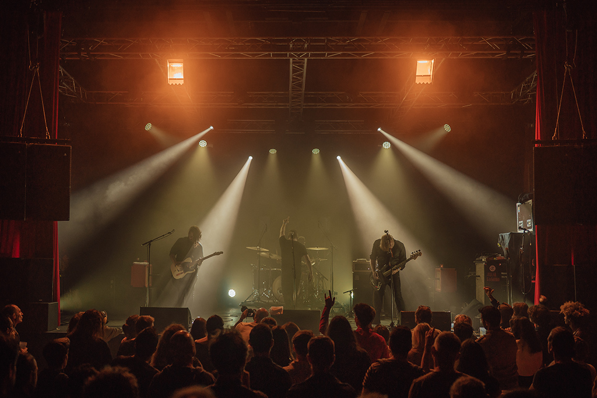

UNSPKBLE // Shows history ///
2020
|
• 29 Août - St Julien Du Tournel (48) @ “Chez Paskoual” W/ Out of School Activities • 2 Octobre - Marvejols (48) @ Le Sillon Lauzé |
2021
• 1er Juin - Le Villard (48) @ “Chez Bulie” • 12 Juin - Freycenet-La-Tour (43) @ Brasserie Ouroboros W/ SHUB, Les Berges du Ravin, The Point Misser, Chaton Chaton, Skaphos, Tempt Fate, D’ailleurs Stress • 13 Aout - Nasbinals (48) @ MordorFest W/ OFO AM, Jessica 93, Poutre, Vautours, Vertex, Chaton Chaton, Radiant, Juda Romantique, Mauvaise Surprise, Obscure Clarté, Boucan, etc. • 1er Octobre - Nîmes (30) @ Paloma - This Is Not A Love Night W/ It It Anita • 30 Octobre - Montpellier (34) @ Maison des choeurs - Festival Ex Tenebris Lux W/ Mars Red Sky, Black Chamber Orchestra, Mère Dragon • 9 Décembre - Montpellier (34) @ The Black Sheep W/ Rank • 10 Décembre - Marseille (13) @ L’Intermédiaire W/ Rank • 11 Décembre - Clermont-Ferrand (63) @ Raymond Bar W/ Rhume Carabiné, Rivières de Corps |
2022
• 26 Mars - Montpellier (34) @ Victoire 2 W/ Princess Thailand • 6 Avril - Bourges (18) @ Le Nadir / Antre Peaux • 7 Avril - Blois (41) @ Le Saint Lubin W/ White Wire • 8 Avril - Paris (75) @ Cirque Électrique W/ Adolina, Echoplain, Poutre • 9 Avril - Lyon (69) @ Sonic W/ Rank • 8 Mai - Montpellier (34) @ Freakshow / Nu-Bahia W/ Oi Boys • 10 Juin - Saint Jean d’Hérans (38) @ Rock Dérives Fest W/ Boucan, Mise en Bière, Mollo-Mollo, Smoking Pistols, The Third Project • 11 Juin - Besançon (25) @ PDZ W/ Rank • 12 Juin - Liège (Belgique) @ La Zone W/ A Band Called E (Thalia Zedek & Jason Sidney Sanford) • 13 Juin - Bruxelles (Belgique) @ Brasserie de La Mule W/ Excellente Attitude • 14 Juin - Reims (51) @ Les Vieux de la Vieille W/ Dosser • 15 juin - Paris (75) @ Supersonic W/ Makthaverskan, Fleur Du Mal • 16 Juin - Rennes (35) @ La Trinquette W/ Mistress Bomb H • 17 Juin - Nantes (44) @ Duchesse W/ Crèvecoeur • 15 Juillet - Rochesson (88) @ Rupture Mountain Fest W/ Jack Dupon, Malevil, Pauwels • 16 Juillet - La Chaise Dieu (43) @ Guinguette La Petite Baigneuse W/ Jack Dupon, Poutre • 8 Septembre - Montpellier (34) @ Ubisoft (Gigs on the roof) • 22 Septembre - Bordeaux (33) @ L'Antidote W/ Tette Chèvre • 23 Septembre - Toulouse (88) @ La Cave à Rock W/ Chaton Chaton, Noel Flantier • 24 Septembre - Millau (12) @ Le Pic Vert Café Resto Culturel W/ Chaton Chaton, Ultra Zook • 27 Octobre - Montpellier (34) @ The Secret Place W/ Point Mort, Skullstorm • 19 Novembre - Nîmes (30) @ La Ruche - 25 ans Assos’Y’Song W/ Raymonde Howard / Halfbob, La Coupure, Regular Girl, One Foot Dancer |
2023
• 25 Février - Perpignan (66) @ El Paseo W/ DJ Naadia • 26 Février - Barcelona (Espagne) @ Los Blokes Fantasma W/ Les Aranyes • 25 Mars - Crest (26) @ Local 5 - Live Of Mars W/ The Smoking Pistols, From Kittens To Lions, The Socials • 31 Mars - Clermont Ferrand (63) @ Raymond Bar W/ Future Yes Men • 1er Avril - Morogues (18) @ Berry Social Club W/ Ellah A Taun, Strong Come Ons • 4 Avril - Paris (75) @ Supersonic W/ The K., Human Toys • 7 Avril - Montpellier (34) Alive My Studio W/ Panicstation • 21 Avril - Mende (48) @ Antirouille W/ Chaton Chaton • 24 Juin - Carnon (34) @ Samynaire 2023 W/ Loons, One Foot Dancer, Harah, Superbeatnik, The Guilty Pleasures, Bo Liddley, Marty Went Back, Wood, Astaffort Mods... • 6 Septembre - Saint-Étienne (42) @ Les Before de Couriot W/ Ma Loutre • 22 Septembre - Aix en Provence (13) @ Festival Aix en Provock #5 W/ Eden Cosmo Dj, Murder My Sweet, Conger ! Conger !, Oslo Tropique, Mumuse • 4 Octobre - Montpellier (34) @ Antirouille – RELEASE PARTY W/ Hide • 5 Octobre - Clermond-Ferrand (63) @ Le Fotomat W/ Datura Deleitar • 21 Novembre - Besançon (25) @ PDZ • 22 Novembre - Metz (57) @ La Chaouée W/ Rimel, Corde Raide • 23 Novembre - Lyon (69) @ Kraspek Myzik W/ Sunday Panic • 24 Novembre - Bourg-Lès-Valence (26) @ Vacarme Exquis - VEX W/ Cumbia Conspiracy • 25 Novembre - Lodèves (34) @ Les Moulinages W/ D'ailleurs Stress, Pir'art |
